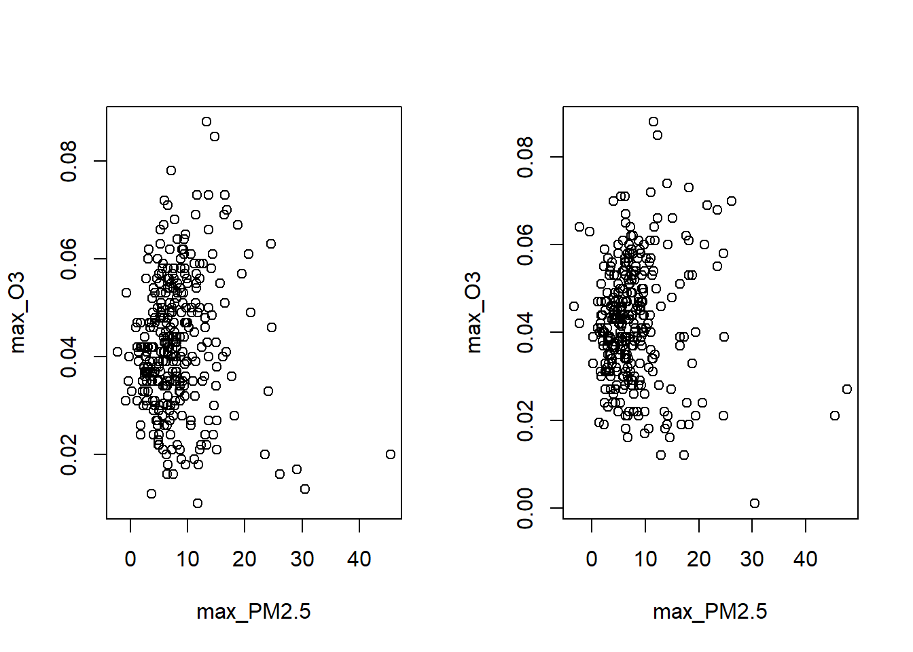

The following real data example is adapted to a large extend from the guidance on Rmisstastic_descriptive_statistics_with_missing_values):
Air Quality Data
Air pollution is currently one of the most serious public health worries worldwide. Many epidemiological studies have proved the influence that some chemical compounds, such as sulphur dioxide (SO2), nitrogen dioxide (NO2), ozone (O3) can have on our health. Associations set up to monitor air quality are active all over the world to measure the concentration of these pollutants.
The data set we use here is a small subset of a cleaned version of air pollution measurements in the US. For more details, I refer to the Appendix C of the following paper. In this example, I actually induced missing values here, so that we have full control over the missing mechanism and access to the true data.
We first load a real (prepared) data set:
library(mice)## Naniar provides principled, tidy ways to summarise, visualise, and manipulate missing data with minimal deviations from the workflows in ggplot2 and tidy data.library(naniar)library(VIM)library(FactoMineR)X<-read.csv("data.csv", header=T, row.names=1)Xstar<-read.csv("fulldata.csv", header=T, row.names=1)head(X)
max_PM2.5 max_O3 max_PM10 Longitude
Min. :-3.300 Min. :0.0010 Min. : 0.00 Min. :-124.18
1st Qu.: 4.100 1st Qu.:0.0330 1st Qu.: 9.00 1st Qu.:-117.33
Median : 6.200 Median :0.0410 Median : 15.00 Median :-106.51
Mean : 7.332 Mean :0.0413 Mean : 18.31 Mean :-102.33
3rd Qu.: 9.200 3rd Qu.:0.0490 3rd Qu.: 23.00 3rd Qu.: -88.22
Max. :56.333 Max. :0.0910 Max. :143.00 Max. : -68.26
NA's :159 NA's :162 NA's :338 NA's :159
Latitude Elevation Land.Use_AGRICULTURAL Land.Use_COMMERCIAL
Min. :26.05 Min. : -14 Min. :0.000 Min. :0.0000
1st Qu.:34.49 1st Qu.: 68 1st Qu.:0.000 1st Qu.:0.0000
Median :38.20 Median : 269 Median :0.000 Median :0.0000
Mean :38.35 Mean : 430 Mean :0.125 Mean :0.3115
3rd Qu.:41.30 3rd Qu.: 571 3rd Qu.:0.000 3rd Qu.:1.0000
Max. :48.64 Max. :2195 Max. :1.000 Max. :1.0000
NA's :353
Land.Use_INDUSTRIAL Location.Setting_RURAL Location.Setting_SUBURBAN
Min. :0.00 Min. :0.000 Min. :0.000
1st Qu.:0.00 1st Qu.:0.000 1st Qu.:0.000
Median :0.00 Median :0.000 Median :0.000
Mean :0.03 Mean :0.193 Mean :0.428
3rd Qu.:0.00 3rd Qu.:0.000 3rd Qu.:1.000
Max. :1.00 Max. :1.000 Max. :1.000
1) Descriptive statistics with missing values
We start by inspecting various plots for the missing values:
res<-summary(aggr(X, sortVar=TRUE))$combinations
Variables sorted by number of missings:
Variable Count
Elevation 0.1765
max_PM10 0.1690
max_O3 0.0810
max_PM2.5 0.0795
Longitude 0.0795
Latitude 0.0000
Land.Use_AGRICULTURAL 0.0000
Land.Use_COMMERCIAL 0.0000
Land.Use_INDUSTRIAL 0.0000
Location.Setting_RURAL 0.0000
Location.Setting_SUBURBAN 0.0000
#The VIM function matrixplot creates a matrix plot in which all cells of a X matrix are visualized by rectangles. Available X is coded according to a continuous color scheme (gray scale), while missing/imputed X is visualized by a clearly distinguishable color (red). If you use Rstudio the plot is not interactive (there are the warnings), but if you use R directly, you can click on a column of your choice: the rows are sorted (decreasing order) of the values of this column. This is useful to check if there is an association between the value of a variable and the missingness of another one.
Creating the res variable renders a nice plot, showing the percentage of missing values for each variable. Moreover the next command nicely shows the patterns (M), as well as their frequency of occurring in the data set. In particular, we can further visualize the pattern using the matrixplot function:
matrixplot(X, sortby =3)
The VIM function marginplot creates a scatterplot with additional information on the missing values. If you plot the variables (x,y), the points with no missing values are represented as in a standard scatterplot. The points for which x (resp. y) is missing are represented in red along the y (resp. x) axis. In addition, boxplots of the x and y variables are represented along the axes with and without missing values (in red all variables x where y is missing, in blue all variables x where y is observed).
marginplot(X[,2:3])
This plot can be used to check whether MCAR might hold. Under MCAR, the distribution of a variable when another variable is missing should always be the same. Under MAR this can be violated as we have seen (distribution shifts!). This plotting is a convenient way to check this a bit.
There are many more plotting possibilities with VIM, as demonstrated e.g., in 2012ADAC.pdf (tuwien.ac.at).
2) Imputation
We now finally use the mice package for imputation. We consider several methods and then start by choosing the best one according to the new I-Score. As the best version of the score not only scores one imputation but an imputation method itself for this dataset, we need to define a function for each:
library(mice)source("Iscore.R")source("miceDRF.R")X<-as.matrix(X)methods<-c("pmm", # mice-pmm"cart", # mice-cart"sample", #mice-sample"norm.nob", # Gaussian Imputation"DRF") # mice-DRF imputationfuncs<-list()for (method in methods) {# Create a closure to capture the current value of 'method' imputationfuncs[[method]] <-local({# Capture the current value of 'method' current_method <- method# Define the function that uses the captured 'current_method'function(X, m, maxit =5) {# Perform mice imputation using the current method tmp <-mice(X, m = m, method = current_method, printFlag =FALSE, visitSequence ="arabic", maxit = maxit)# Return the completed datasetsreturn(mice::complete(tmp, action ="all")) } })}scoreslist <-Iscores_new(X,imputations=NULL, imputationfuncs=imputationfuncs, N=30) scores<-do.call(cbind,lapply(scoreslist, function(x) x$score ))names(scores)<-methodsscores[order(scores)]
The score considers mice-cart to to be the best method. As a side note however, mice-rf is deemed second best and might have better properties for uncertainty estimation and multiple imputation, thus both should be considered. Here, we go with mice-cart:
imp.mice <-mice(X, m =10, method ="cart", printFlag = F)
Since we have the true data in this case, we analyze the imputation method a bit closer:
## This here is not possible without the fully observed data ###Ximp<-mice::complete(imp.mice)index1<-1index2<-2par(mfrow=c(1,2))plot(Xstar[is.na(X[,index1]) |is.na(X[,index2]),c(index1,index2)])plot(Ximp[is.na(X[,index1]) |is.na(X[,index2]),c(index1,index2)])

# Replicating first and second momentscolMeans(Xstar)-colMeans(Ximp)
# Apply a regression to the multiple imputationlm.mice.out <-with(imp.mice, lm(max_O3 ~ max_PM2.5+Longitude +Latitude +Elevation +Land.Use_AGRICULTURAL+Land.Use_COMMERCIAL+Land.Use_INDUSTRIAL+Location.Setting_RURAL+Location.Setting_SUBURBAN))# Use Rubins Rules to aggregate the estimatesres<-pool(lm.mice.out)summary(res)
Importantly, this works here because we have all the ingredients for the pool function, which are (according to ?pool):
the estimates of the model;
the standard error of each estimate;
the residual degrees of freedom of the model.
Just to double check, we also perform the regression on \(X^*\):
## This here is not possible without the fully observed data ###res.not.attainable<-lm(max_O3 ~ max_PM2.5+Longitude +Latitude +Elevation +Land.Use_AGRICULTURAL+Land.Use_COMMERCIAL+Land.Use_INDUSTRIAL+Location.Setting_RURAL+Location.Setting_SUBURBAN, data=as.data.frame(Xstar))summary(res.not.attainable)
Of course there are many more challenges, especially also for data that may be partly dependent (for instance repeat measurement or panel data). Most importantly, mice-cart is awesome, but it does not model the uncertainty of the missing imputation itself. As such it is technically not a proper imputation method, as one part of the uncertainty is missing. This could be an issue for confidence intervals and p-values especially in smaller samples. We also refer to the provided links for more information. In particular also the task view on missing data.